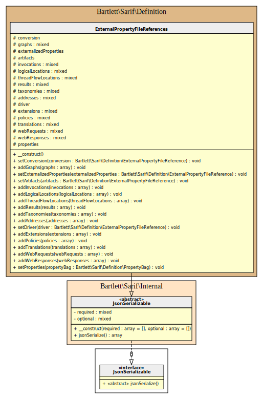

externalPropertyFileReferences object
An externalPropertyFileReferences object contains information that enables a SARIF consumer
to locate the external property files that contain the values of all externalized properties associated with theRun.

[!TIP]
Generated with following command :
php ./resources/serialize.php externalPropertyFileReferences docs/assets/sarif 192
docs/assets/sarif/externalPropertyFileReferences.json
{
"$schema": "https://json.schemastore.org/sarif-2.1.0.json",
"version": "2.1.0",
"runs": [
{
"tool": {
"driver": {
"name": "CodeScanner",
"semanticVersion": "1.1.2-beta.12",
"informationUri": "https://codeScanner.dev"
}
},
"originalUriBaseIds": {
"LOGSDIR": {
"uri": "file:///C:/logs/"
}
},
"externalPropertyFileReferences": {
"conversion": {
"location": {
"uri": "scantool.conversion.sarif-external-properties",
"uriBaseId": "LOGSDIR"
},
"guid": "11111111-1111-1111-8888-111111111111"
},
"results": [
{
"location": {
"uri": "scantool.results-1.sarif-external-properties",
"uriBaseId": "LOGSDIR"
},
"guid": "22222222-2222-1111-8888-222222222222",
"itemCount": 1000
},
{
"location": {
"uri": "scantool.results-2.sarif-external-properties",
"uriBaseId": "LOGSDIR"
},
"guid": "33333333-3333-1111-8888-333333333333",
"itemCount": 4277
}
]
},
"results": []
}
]
}
examples/externalPropertyFileReferences.php
<?php declare(strict_types=1);
/**
* This file is part of the Sarif-PHP-SDK package.
*
* For the full copyright and license information, please view the LICENSE
* file that was distributed with this source code.
*
* @author Laurent Laville
*/
use Bartlett\Sarif\Definition\ArtifactLocation;
use Bartlett\Sarif\Definition\ExternalPropertyFileReference;
use Bartlett\Sarif\Definition\ExternalPropertyFileReferences;
use Bartlett\Sarif\Definition\Run;
use Bartlett\Sarif\Definition\Tool;
use Bartlett\Sarif\Definition\ToolComponent;
use Bartlett\Sarif\SarifLog;
require_once dirname(__DIR__) . '/vendor/autoload.php';
$driver = new ToolComponent();
$driver->setName('CodeScanner');
$driver->setInformationUri('https://codeScanner.dev');
$driver->setSemanticVersion('1.1.2-beta.12');
$tool = new Tool();
$tool->setDriver($driver);
$run = new Run();
$run->setTool($tool);
$logsDir = new ArtifactLocation();
$logsDir->setUri('file:///C:/logs/');
$run->addAdditionalProperties([
'LOGSDIR' => $logsDir,
]);
$location = new ArtifactLocation();
$location->setUri('scantool.conversion.sarif-external-properties');
$location->setUriBaseId('LOGSDIR');
$conversion = new ExternalPropertyFileReference();
$conversion->setLocation($location);
$conversion->setGuid('11111111-1111-1111-8888-111111111111');
$location = new ArtifactLocation();
$location->setUri('scantool.results-1.sarif-external-properties');
$location->setUriBaseId('LOGSDIR');
$resultRef1 = new ExternalPropertyFileReference();
$resultRef1->setLocation($location);
$resultRef1->setGuid('22222222-2222-1111-8888-222222222222');
$resultRef1->setItemCount(1000);
$location = new ArtifactLocation();
$location->setUri('scantool.results-2.sarif-external-properties');
$location->setUriBaseId('LOGSDIR');
$resultRef2 = new ExternalPropertyFileReference();
$resultRef2->setLocation($location);
$resultRef2->setGuid('33333333-3333-1111-8888-333333333333');
$resultRef2->setItemCount(4277);
$externalPropertyFileReferences = new ExternalPropertyFileReferences();
$externalPropertyFileReferences->setConversion($conversion);
$externalPropertyFileReferences->addResults([$resultRef1, $resultRef2]);
$run->setExternalPropertyFileReferences($externalPropertyFileReferences);
$log = new SarifLog([$run]);
[!NOTE] This alternative API is available since release 1.5.0
examples/builder/externalPropertyFileReferences.php
<?php declare(strict_types=1);
/**
* This file is part of the Sarif-PHP-SDK package.
*
* For the full copyright and license information, please view the LICENSE
* file that was distributed with this source code.
*
* @author Laurent Laville
*/
require_once dirname(__DIR__, 2) . '/vendor/autoload.php';
use Bartlett\Sarif\Factory\BuilderFactory;
$factory = new BuilderFactory();
// @link https://github.com/llaville/sarif-php-sdk/blob/1.1/docs/reference/result.md
$spec = $factory->specification('2.1.0')
->addRun(
$factory->run()
->tool(
$factory->tool()
->driver(
$factory->driver()
->name('CodeScanner')
->semanticVersion('1.1.2-beta.12')
->informationUri('https://codeScanner.dev')
)
)
->addOriginalUriBaseId(
'LOGSDIR',
$factory->artifactLocation()
->uri('file:///C:/logs/')
)
->externalPropertyFileReferences(
$factory->externalPropertyFileReferences()
->conversion(
$factory->externalPropertyFileReference()
->location(
$factory->artifactLocation()
->uri('scantool.conversion.sarif-external-properties')
->uriBaseId('LOGSDIR')
)
->guid('11111111-1111-1111-8888-111111111111')
)
->addResult(
$factory->externalPropertyFileReference()
->location(
$factory->artifactLocation()
->uri('scantool.results-1.sarif-external-properties')
->uriBaseId('LOGSDIR')
)
->guid('22222222-2222-1111-8888-222222222222')
->itemCount(1000)
)
->addResult(
$factory->externalPropertyFileReference()
->location(
$factory->artifactLocation()
->uri('scantool.results-2.sarif-external-properties')
->uriBaseId('LOGSDIR')
)
->guid('33333333-3333-1111-8888-333333333333')
->itemCount(4277)
)
)
)
;